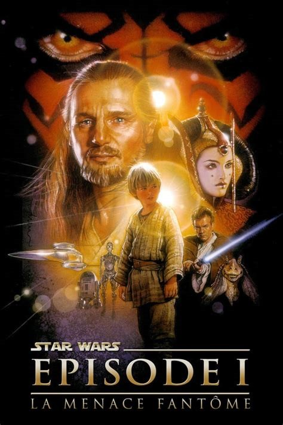

Mace Windu
Mace Windu est un maître Jedi, personnage de la saga cinématographique Star Wars. Il est interprété au cinéma par Samuel L. Jackson dans La Menace fantôme , L'Attaque des clones et La Revanche des Sith.
| Apparaît dans : | La Menace fantôme , L'Attaque des clones et La Vengeance des Sith | Praière apparition : | La Menace fantôme |
|---|---|
| Affiliations : | Ordre Jedi/République galactique |
| Race : | Être humain |
| Genre : | Masculin |
| Planète d'origine : | Haruun Kal |
| Métier : | Maître Jedi |
| Côté de la force : | Côté lumineux |
Rôle dans l'histoire
Dans les événements qui ont abouti à la bataille de Géonosis (Attaque des clones ), Mace Windu accompagna 200 Jedi chargés de secourir Obi-Wan Kenobi, sur le point d'être exécuté en compagnie d'Anakin Skywalker et de la Sénatrice Padmé Amidala sur ordre du Comte Dooku.
Pendant la guerre des clones, Maître Windu fut l'un des grands généraux de l'armée de la République, en possédant une légion de 5 000 hommes et un commandant clone, du nom de commandant Ponds. Lors de la bataille de Ryloth, il arrêta Wat Tambor, qui retenait prisonniers les Twi'leks.
Lors de la bataille de Coruscant, après le sauvetage du Chancelier Palpatine sur le vaisseau amiral du général Grievous (la Main Invisible), il apprend grâce à Anakin Skywalker que le Seigneur Noir des Sith, Dark Sidious, n'est autre que le Chancelier en personne. Pressé d'arrêter le Sith, le Maître Jedi se rend immédiatement à son bureau accompagné de trois Jedi seulement, Kit Fisto, Agen Kolar et Saesee Tiin.